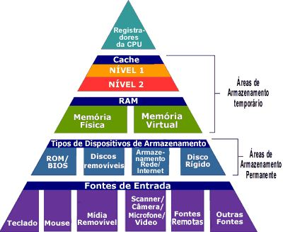

Hierarquia de memória
Introdução ao estudo da hierarquia de memória
Na base da pirâmide, tem-se as memórias de baixo custo, maior capacidade de armazenamento e menor desempenho. No topo da pirâmide, tem-se as memórias de maior custo, menor capacidade de armazenamento e maior desempenho.

Características de Desempenho
As memórias podem ser caracterizadas pelos seguintes parâmetros de desempenho: tempo de acesso, capacidade de armazenamento, volatilidade, tecnologia e custo.Estudo dos dispositivos de memória
Registros (registradores) – Memórias individuais agrupadas para armazenar uma palavra em binário. São de alto desempenho, usadas pela CPU ou por outros dispositivos para armazenamento temporário de dados. Alguns registradores na CPU participam do processamento e podem ser acessados por programas. Registradores especiais somente podem ser acessados pela CPU.Memória Cache (aumenta velocidade) – São memórias rápidas, com capacidade de alguns KB a poucos MB, localizadas próxima à CPU. Existem em dois níveis: L1 (Level 1) e L2 (Level 2).
Estudo dos dispositivos de memória
RAM (Random Access Memory -Memória de Acesso Randômico). Permitem leitura e gravação. O termo randômico indica que a memória tem acesso não sequencial, isto é, o tempo para gravação ou leitura de qualquer posição da memória não depende de localização. Duas tecnologias de fabricação: DRAM e SRAM.
Computação em nuvem?
Os principais provedores globais de nuvem pública hoje, são a Amazon AWS, Microsoft Azure IBM e Google.

Nova Tecnologia
Utilizada pela Silicon Quantum Computing Pty Limited e deverão ser usadas para a criação e comercialização de computadores quânticos em larga escala.

O que é nanotecnologia?
Entendimento e controle da matéria em nanoescala. Ela atua no desenvolvimento de materiais e componentes para diversas áreas.